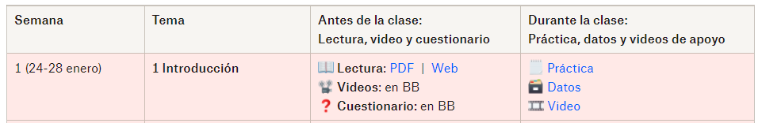

| Criterio: |
|---|
| - [ ] 1. Accede al curso de Blackboard. |
| - [ ] 2. Haz un bookmark de esta página y ponle un nombre fácil de encontrar. 🔖 |
| - [ ] 3. Accede a los links del resto de esta página (p.ej. los 3 parciales). |
| - [ ] 4. Abre tu cuenta en Perusall (Código: MEJIA-UDUQL) y verifica que puedas acceder a las lecturas con sus videos. |
| - [ ] 5. Comparte la carpeta de tu equipo en Google Drive a tu profesor (manuel.mejia@cety.mx) con permisos de edición. |
| - [ ] 6. Verifica que tienes instalado Word y Excel en tu computadora. |
| - [ ] 7. Instala JASP y verifica que abra. |
🔨 Método de trabajo
🔨 Cómo trabajar en esta materia
tl;dr
- Antes del primer día de clase de cada semana: 1) Lee el capítulo del libro de texto en Perusall; 2) Contesta el cuestionario en Blackboard.
- Durante clase: 1) Resuelve la práctica de la semana (Usa Excel, Word, y JASP para trabajar), 2) Sube tus resultados en una carpeta compartida de GoogleDrive.
- Después de clase: 1) Revisa retroalimentación en tu práctica, y corrije lo que sea necesario, o lo que te haya faltado; 2) Explica los cambios que hiciste y lo que corregiste.
- Al final de cada parcial: 1) Entrega un avance de un análisis de datos que tú hayas elegido; 2) Realiza una reflexión ética (basado en la lectura indicada, en el parcial final); 3) El último parcial incluye dos exámenes finales: uno teórico y uno práctico.
📖 El libro base
🥗 Ingredientes de la materia
- La materia funciona de manera modular, es decir, trabajaremos de manera que cada tema es un módulo, y cada módulo lo terminaremos en el lapso de una semana.
- La semana inicia días antes de la primera clase: tiempo que tendrás que usar para prepararte previo a la clase con los temas que revisaremos esa semana.
- La semana termina el domingo (posterior a las clases de ese tema), donde tienes como fecha límite para terminar los materiales de ese módulo/tema.
- Cada módulo contiene:
- 1 lectura (con videos de apoyo y espacio para interactuar).
- 1 cuestionario.
- 1 práctica.
- Los materiales para los módulos/temas del parcial en curso los tendrás disponibles durante todo el parcial, desde el inicio. Por lo que puedes adelantar el estudiar los temas de las siguientes semanas si te es conveniente.
- Para revisar los detalles de cada una, revisa las siguientes secciones.
🗓️ El trabajo cada semana
- 📖 Lectura: Leer/estudiar un capítulo del libro por semana. Debes haber leído el capítulo antes de llegar a la clase donde se revisará el tema. Revisa el calendario abajo. Para demostrar la lectura que realizaste, debes interactuar en la plataforma Perusall.
La interacción puede ser: avanzando en la lectura, subrayando partes importantes, escribiendo preguntas/opiniones, contestando preguntas/opiniones de tus compañerxs, que tus comentarios/preguntas generen participación de tus compañerxs y sean de calidad, votando por comentarios o preguntas de otros compañerxs, espaciando tu lectura (no leyendo todo en un solo día), encontrando errores en la lectura y haciendo anotaciones identificándolos, entre otros.
Videolecciones de apoyo: cada lectura tendrá videolecciones mencionadas, pero éstas son únicamente de apoyo a la lectura. Revísalas de manera opcional para poder complementar o aclarar las partes de la lectura que necesites.
Fecha importante: Deberás haber leído el capítulo a más tardar el domingo anterior a la clase de la semana correspondiente, antes de las 5:59 pm. Por ejemplo, si la primera clase de la semana es en martes, a las 5:59 pm del domingo anterior tendrás que haber terminado la lectura y haber interactuado con ella.
- Cuestionarios: Cada capítulo tiene un cuestionario. Cada cuestionario lo puedes contestar un número ilimitado de veces. Para que cuente para tu calificación, debes haberlo respondido al menos una vez antes de la semana de ese tema, y mejorar tu calificación antes del cierre del parcial. Revisa cómo te fue en el cuestionario y estudia aquello que te haya quedado poco claro, contesta cada cuestionario las veces que necesites antes de que termine el parcial correspondiente, buscando obtener 100 de calificación.
- Fecha importante: Deberás haber contestado al menos una vez el cuestionario correspondiente al capítulo a más tardar el domingo anterior a nuestra primera clase de esa semana, antes de las 11:59 pm. Posterior a esa primera ocasión, podrás contestar las veces que quieras cada cuestionario. La calificación máxima obtenida es la que contará para tu calificación.
- 👷👷♀️Prácticas: Cada capítulo tiene una práctica asociada. Se espera que hayas leído de qué trata la práctica antes de llegar a las clases donde se revisará ese tema. Durante la clase se dará tiempo de contestar la práctica, en equipos entre estudiantes, y con asesoría del docente. Para que avances de la mejor manera, es importante que llegues a la clase lo mejor preparada posible: leyendo el capítulo, contestando y revisando los cuestionarios, y sabiendo de qué tratará la práctica. Es muy importante que termines cada práctica en el tiempo de clase, pues estar al día con las prácticas contará para tu calificación.
- Fecha importante: Deberás haber terminado la práctica del capítulo a más tardar el último día que tengamos clase en la semana correspondiente, antes de las 11:59 pm. Por ejemplo, si nuestra última clase de la semana es en jueves, deberás tener completada la práctica ese mismo jueves antes de las 11:59 pm.
👷👷♀️ Las prácticas
tl;dr
Durante clase dedicarás el tiempo a resolver la práctica indicada para esa semana. Responderás en un archivo en Google Docs, que estará en una carpeta compartida con tu docente. Usarás Excel, el libro de texto, los videos, JASP, y bases de datos diversas para resolver las prácticas. Podrás colaborar en equipos para realizarlas, pero debes resolverlas por tí misma/o.
Es importante que termines la práctica durante el tiempo de clase, y que corrijas la práctica si se te indica.
- Cada práctica se compone de tres materiales:
- Un archivo de texto con el contexto y las preguntas a responder.
- Un archivo de datos, con los datos a analizar.
- Una serie de videos, con explicaciones sobre procedimientos relevantes para realizar el análisis.
Por ejemplo:

- Durante cada clase, se hará un repaso breve de los conceptos principales del capítulo, y se dedicará tiempo para resolver la práctica correspondiente. Es importante que a la clase: 1) lleves computadora, 2) tengas instalado el software necesario, y 3) hayas verificado que tengas acceso a tus archivos para la clase.
- 1ra clase de la semana:
- Al inicio dedicaremos unos minutos para repasar los principales temas del módulo. Usaremos los comentarios y preguntas publicadas en Perusall.
- El resto de la clase lo dedicaremos a resolver la práctica del módulo.
- Para esto nos dividiremos en equipos, donde los equipos deberán encontrar cómo resolver las preguntas en orden. Se espera que el equipo se apoye entre sí, pero que no divida el trabajo. Para verificar esto, las prácticas tendrán secciones para cada uno de los integrantes del equipo. Coloca tu nombre en cada sección que te corresponda contestar.
- Deberás trabajar en una carpeta en Google Drive compartida con tu equipo y con tu docente (manuel.mejia@cetys.mx).
- Cada cierto número de preguntas, revisaremos con todo el grupo los avances, y pediremos a un equipo que muestre cómo resolvió las preguntas.
- En casa, entre la primera y segunda clase de la semana, es importante que, si te faltó algo de la práctica, lo avances.
- 2da clase de la semana:
- La primera mitad la dedicaremos a terminar la práctica de la semana.
- En la segunda mitad pediremos una actividad a cada equipo, esta puede consistir en:
- Explicar la práctica en la sesión principal.
- Mostrar un procedimiento realizado.
- Explicar los conceptos del tema sobre lo realizado en la práctica.
- Grabarse explicando alguno de los puntos anteriores.
- Entre otros.
- A lo largo de ambas clases de la semana, tu docente revisará el avance individual de cada estudiante de diferentes maneras: ya sea pidiéndote compartir pantalla, explicando verbalmente algo, o compartiéndote comentarios dentro del archivo de tu práctica.
- Los comentarios NO los debes borrar, pues serán evidencia de que has mejorado tu práctica, al dar respuesta a ellos.
- Tu avance en la práctica durante clase contará para la calificación que obtendrás en el parcial. (Revisa los criterios de evaluación más abajo).
- 1ra clase de la semana:
- Importante | Sobre el trabajo en equipos: no se dividan el trabajo de la práctica, cada estudiante debe lograr un dominio suficiente de cómo contestar cada una de los tipos de preguntas de la práctica. El trabajo en equipos es para apoyarse, y que vayan en conjunto resolviendo la práctica. Algunas recomendaciones:
- Usen el compartir pantalla por turnos.
- Traten de prender la cámara al hablar.
- Usen el chat del documento para compartir materiales.
- Cuando no entiendas algo, o tengas alguna duda o confusión, exprésala. Probablemente otros en tu equipo puedan tener la misma duda, y probablemente alguno tendrá la respuesta.
- Si no encuentran la respuesta a alguna duda o confusión, pregunta en las discusiones en Perusall, o pide ayuda a tu docente.
- Cuida que cada persona del equipo conteste sus secciones ingresando con su cuenta institucional.
- Después de cada clase. Es importante que busques mantenerte al día con tus prácticas, pues cada semana estaremos moviéndonos a nuevos temas con su respectiva práctica.
- Tu docente revisará lo que realizaste después del final de cada clase, y podrá hacer comentarios con retroalimentación a lo que realizaste.
- Deberás incorporar las correcciones necesarias, contestando al comentario lo que hiciste para corregir lo indicado. Recuerda: no borres los comentarios de tu profesor, contesta a ellos explicando qué hiciste para corregir.
- Las correcciones realizadas contarán para la calificación que obtendrás en el parcial.
📂 Las herramientas a usar para seguir la materia
- Blackboard Ultra. Es la plataforma oficial del curso. Los anuncios se realizará a través de Blackboard. Aquí también contestarás los cuestionarios, y encontrarás enlaces al resto de los materiales.
- Perusall. Para estudiar tus temas antes de cada clase, deberás realizar las lecturas interactuando suficientemente con ellas en las fechas límite indicadas.
- YouTube. Cada lectura tiene videos de apoyo adicionales. En caso de que quieras revisar los videos a mayor velocidad (recomendable entre 1.5 y 2x), puedes usar las herramientas mismas de YouTube o una extensión en Chrome: Video Speed Manager.
- Esta página. Haz un bookmark de esta página, pues aquí estarán las fechas y trabajos que haremos durante todo el semestre.
- Software. Para realizar los análisis necesarios para cada práctica, necesitarás tener herramientas de Office, como Word y Excel. Usaremos también software especializado como JASP y Jamovi, o como Google Colab.
- Bases de datos. La mayor parte de las prácticas se basará en unas pocas bases de datos de temas de actualidad. Aunque la base de datos a analizar pueda cambiar en cada práctica, la principal base que usaremos es la del proyecto de Social Justice Sexuality.
- Es el proyecto más grande que ha encuestado a personas de comunidades negrx, latinx, y de islas del Pacífico y Asia, de comunidades lesbiana, gay, bisexual y transgénero (LGBT).
- Cerca de 5,000 personas están representadas en la base, de los 50 estados de EEUU, Washington DC y Puerto Rico.
- De ámbitos rurales y suburbanos, además de áreas urbanas grandes, y de una variedad de edades, identidades raciales/étnicas, orientaciones sexuales, e identidades de género.
☑️ Checklist para iniciar el semestre:
💬¿Cómo nos comunicaremos?
Usa Perusall para comunicarte
Una vez que hayas creado tu usuario en Perusall, encuentra la opción de “Discusión General”. En ese espacio podrás iniciar una conversación, visible para el resto de la generación.
- Reglas básicas para las discusiones en Perusall:
- Evita los mensajes directos (DMs) al profesor. Escribe en las discusiones generales.
- Mantén tu comunicación respetuosa, profesional, amable y apropiada.
- Trata de usar las discusiones para hacer preguntas (y para contestar preguntas de otras personas, si tienes la respuesta).
- Para comunicaciones dentro de tu equipo, usa los mismos mecanismos de GoogleDocs, por ejemplo, los comentarios en los archivos, y el chat del documento.
🔩 Recursos de apoyo.
- Poldrack, R. (2019). Statistical thinking for the 21st century. [Electronic book]. https://statsthinking21.org/ [Versión en español]. [Versión en inglés].
- Centro Nacional para la Evaluación de la Educación Superior, A.C. (2014.). Guía para el sustentante. EXAMEN GENERAL PARA EL EGRESO DE LA LICENCIATURA EN PSICOLOGÍA.
- Field, A. (2013). Discovering statistics using IBM SPSS Statistics (4th ed.). UK: SAGE.
- Kerlinger, F. & Lee, H. (2002). Investigación del comportamiento (4ta ed.). México: McGraw Hill.
- Martínez, C. (2012). Estadística y muestreo. [Libro electrónico] Bogotá: Ecoe.
- Navarro, D.J., Foxcroft, D.R., & Faulkenberry, T. J. (2019). Learning statistics with JASP: a tutorial for psychology students and other beginners. (Version 1/√2). https://learnstatswithjasp.com/
- Pagano, R. (2011). Estadística para las ciencias sociales (9na Ed.). México: CENGAGE.
- Valdes, F. y Ponterio, R. (s.f.). Comprensión y uso de la estadística. Recuperado de http://www.cortland.edu/flteach/stats/stat-sp.html
- Asociación Mexicana de Orientación Psicológica y Psicoterapia. (2011). Código de ética 2011 para el orientador psicológico mexicano. Disponible en http://amopp.org/amopp-p/images/pdf/cdigo%20de%20tica%202011.pdf
- Asociación Mexicana de Terapia Familiar. (s.f.). Código Ético de la Asociación Mexicana de Terapia Familiar, A.C. Disponible en http://amtf.com.mx/codigo_etico/codigo_etico.html
- Quero, V.C. y Murueta, M.E. (s.f.). Código ético del psicólogo. Disponible en http://www.amapsi.org/portal/index.php?option=com_content&task=view&id=215&Itemid=110
- Sociedad Mexicana de Psicología. (2010). Código ético del psicólogo. México: Trillas.
- Jano, S.M. (s.f.). Guía de manejo de Excel para la asignatura estadística descriptiva. Proyecto piloto ECTS Curso 2006/2007. Disponible en: http://www.uam.es/personal_pdi/economicas/rociomar/apuntes-excel.pdf
- Manual Microsoft Oficce/Excel 2010. Disponible en: http://www.uv.mx/personal/llopez/files/2013/03/Manual-Microsoft-Office-Excel-2010.pdf
- Pérez, E.E. y González, C.E.E. (2012). Manual de instrucción de Microsoft Excel 2010. Uso básico. Disponible en: http://www.cetem.upr.edu/cetem/download/manuales/office-2010/excel2010_basico.pdf
- JASP Team (2020). JASP (Version 0.14.1.0) [Computer software]. https://jasp-stats.org/
- R Core Team (2013). R: A Language and Environment for Statistical Computing. Vienna, Austria: R Foundation for Statistical Computing. https://www.r-project.org/
- RStudio (2020). RStudio Free version (1.3.1093) [Computer software]. https://rstudio.com/products/rstudio/download/#download
- Bancos de información (EBSCO, ERIC, REDALYC, etc.).
- Biblioteca Digital de CETYS: http://bibliotecadigital.cetys.mx/
Nota sobre el software
Quienes conozcan un poco de estadística por otras materias, o conozcan personas que están tomando un curso de estadística en otras licenciaturas o universidades se preguntarán porqué no usamos SPSS en esta materia. Una manera de responder esto la expone Jonas Lindelov en su post “SPSS is dying. It’s time to change” . O puedes leer la versión del equipo mismo de JASP: https://jasp-stats.org/2017/11/01/jasp-vs-spss/
Aprendizaje experiencial
La estructura de esta materia se apega a la metodología de aprendizaje experiencial de CETYS Universidad, de manera que cada temática contiene una experiencia práctica sobre los conceptos estadísticos revisados. Como ejemplo, en la Unidad 2, Tema 7 “Muestreo”, en dos sesiones de trabajo, se realiza el “Ciclo del Aprendizaje Experiencial” (AE) de la siguiente manera:
Experiencia concreta (Construir vía VIVENCIA) El estudiante se implica de manera abierta en la nueva experiencia. Desarrolla el PENSAMIENTO SISTÉMICO. |
Observación Reflexiva (Transformar vía INTENCIÓN) El estudiante reflexiona y observa sus experiencias desde múltiples perspectivas. Desarrolla el PENSAMIENTO ANALÍTICO Y CRÍTICO |
| Los estudiantes realizan una práctica de laboratorio donde simulan múltiples muestras obtenidas de una población, de una variable cuantitativa. Este muestreo se realiza aleatoriamente, y se repiten diferentes pasos para poder obtener muchas muestras y ver la distribución de estadísticos (media y desviación estándar). | Los estudiantes reflexionan sobre la distribución del estadístico (media) en las muestras obtenidas, buscando encontrar patrones en esa distribución y comparando con los datos de la población. |
Conceptualización Abstracta (Construir vía COMPRENSIÓN) El alumno es capaz de crear conceptos que integren sus observaciones en teorías construidas con lógica. Desarrolla el PENSAMIENTO ABSTRACTO, CIENTÍFICO |
Experimentación Activa (Transformar vía EXTENSIÓN) El alumno es capaz de usar esas teorías para tomar decisiones y resolver problemas. Desarrolla el PENSAMIENTO CREATIVO E INNOVADOR |
| Los estudiantes analizan la teoría del límite central y sus enunciados sobre la relación entre población y distribución de las muestras. Analizan cómo se demuestran esos conceptos en la simulación de muestras que realizaron y cómo se relacionan con los intervalos de confianza. | Los estudiantes realizan un muestreo aleatorio de una nueva muestra, y calculan los intervalos de confianza de esa muestra única obtenida. Explican la incertidumbre de la muestra usando los conceptos establecidos. |